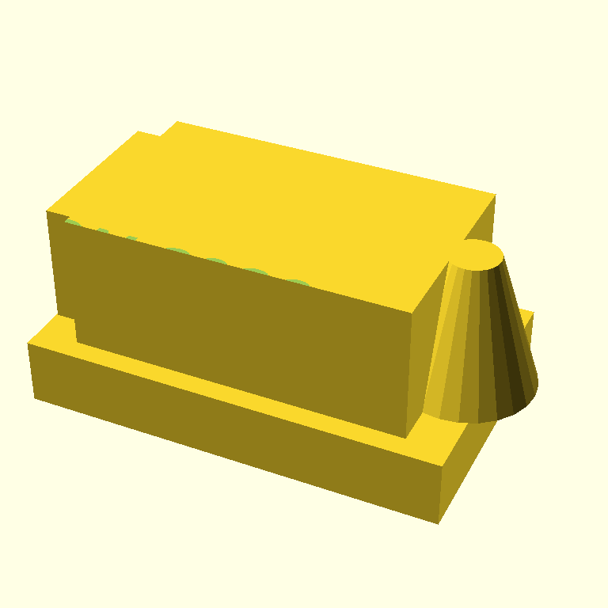
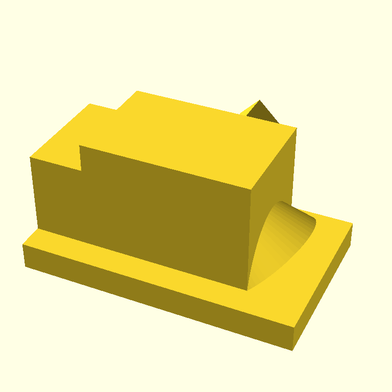
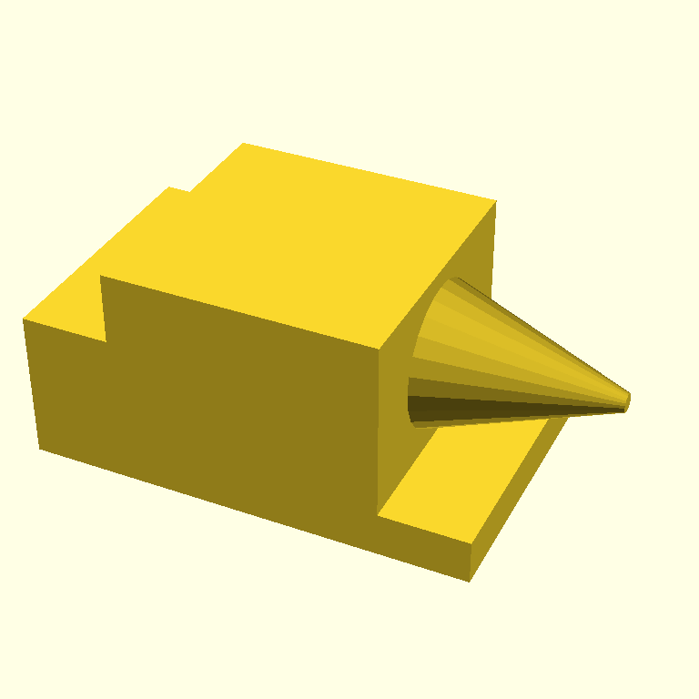

The prompt
Same simplified anvil prompt sent to every model in this experiment. Deliberately no orientation hint — we want to see which models naturally know to rotate before linear_extrude for vertical-wall text:
Create a small 3D-printable OpenSCAD anvil with "PYCON 2026" embossed on the side.
Build:
- A flat base
- A central body block on top of the base
- A tapered horn extending from one side
- A short heel block on the other side
- "PYCON 2026" text embossed (recessed) into one side face of the body
Constraints:
- Only cube(), cylinder(), text(), linear_extrude(), translate(), rotate(), difference(), union()
- $fn = 24 globally
- No minkowski() or hull()
Target ~50 mm wide. FDM-printable at 0.2 mm layers, no supports.Generated by scripts/multi_generator.py, single-shot, same SYSTEM_GENERATE system prompt the live agent uses. Each model lands in its own commit on the raspberry-pi-demos branch.
anthropic/claude-haiku-4.5 — baseline
The model scadia uses internally. Generated in 3.8s, rendered in 2.9s.

What's right:
- Recognizable anvil silhouette
- Actual tapered horn — uses
cylinder(h=16, r1=8, r2=3), a clean trick for a smooth cone-like taper withouthull() - 18 lines of SCAD; named modules; no over-engineering
What's wrong (the bug we expected):
-
The PYCON 2026 text is the same horizontal-slab bug as in the retro case. The relevant block:
module text_emboss() { translate([-15, -15, 20]) { linear_extrude(height = 1.5) { text("PYCON 2026", size = 6, halign = "center", valign = "center", font = "Arial:style=Bold"); } } }The body's top face sits at z=20. The text is
linear_extruded from z=20 to z=21.5 — a flat slab on top of the body, with the letter shapes laid out in the XY plane. Thedifference()against the anvil only carves where the slab and body overlap, which is a paper-thin crust at z=20. Result: a barely-visible CSG seam on the top edge (the green dots in the render), nothing on a side wall.No
rotate()was used. This is the third consecutive Claude run where wall-face text becomes a horizontal slab. Strong evidence it's a Claude habit, not a one-off.
Next: google/gemini-2.5-flash on the same prompt — different model, same task, see what changes.
google/gemini-2.5-flash
Generated in 2.9s, rendered in 4.1s.

What's right:
-
Used
rotate([90, 0, 90])beforelinear_extrude— exactly the move Claude didn't make. Gemini knows that text on a vertical wall needs to be reoriented out of the XY plane first:module anvil_text() { translate([40, -0.1, 15]) { rotate([90, 0, 90]) { linear_extrude(height = 2) { text("PYCON 2026", size = 8, font = "Sans:style=Bold"); } } } }This is the first time across this branch's runs that a generator has reached for
rotateon text. Strong evidence that "letters lay flat" is a Claude habit, not a universal LLM habit.
What's wrong (different bug, same outcome):
-
The text emboss never reaches the rendered surface. The top-level structure is:
union() { anvil_base(); anvil_body(); anvil_horn(); anvil_heel(); difference() { anvil_body(); anvil_text(); } }Notice
anvil_body()is unioned twice — once positively, once with the text differenced. Sinceunion(A, A - text) = A, the unmodified copy of the body covers the cut-out copy. Thedifference()runs but its result gets erased by the parallel union. The text emboss is structurally invisible. Gemini understood text orientation but missed thatdifference()needs to be at the top level, not buried alongside a duplicate of the same module. - Horn is a 45°-rotated cylinder + cube combo — visible but reads as a tilted wedge rather than a clean tapered horn.
- Used
$fn = 60, not the requested$fn = 24(minor).
Cumulative pattern after two models:
| model | rotate before extrude? | top-level difference? | text visible? |
|---|---|---|---|
claude-haiku-4.5 | no | yes (difference(anvil(), text_emboss())) | no — text laid flat above the body |
gemini-2.5-flash | yes | no — text differenced against duplicate body | no — duplicate body overshadows the cut |
Both produced invisible text via different mistakes. Two models, two distinct bug classes — but if you only looked at renders you'd think they had the same problem.
Next: openai/gpt-5-mini.
openai/gpt-5-mini — needed an 8192-token budget; produced parser-error SCAD
First attempt with the script's default max_tokens=2048 returned finish_reason="length" and content=null. GPT-5-mini is a reasoning model — it spent all 2048 tokens on internal reasoning that doesn't surface in content, leaving zero budget for actual SCAD output. Added a --max-tokens flag to the script and re-ran with --max-tokens 8192. Generation took 121 seconds (vs. 3.8 s for Claude, 2.9 s for Gemini) and produced SCAD that fails to parse. No render.
ERROR: Parser error: syntax error in file …, line 29Looking at the SCAD source, gpt-5-mini wrote two versions of the text emboss in the same file:
// Version 1 (lines 26–42) — broken
module embossed_text(str, size, depth, body_w, body_d, body_h, base_th) {
text_obj = linear_extrude(height=depth) // ← invalid: OpenSCAD has no variable assignment for geometry
rotate([0,0,-90])
text(str, size=size, halign="center", valign="center");
translate([body_w/2 + 0.01, 0, base_th + body_h/2])
rotate([0,-90,0])
children_safe(text_obj); // ← invented wrapper to "fix" the variable issue
}
// Version 2 (lines 70–77, inside difference()) — correct
translate([body_w/2 + 0.01, 0, base_th + body_h/2])
rotate([0,-90,0])
linear_extrude(height=text_depth)
rotate([0,0,-90])
text("PYCON 2026", size=text_size, halign="center", valign="center");Version 2 is actually right — chained transforms onto text(), no variable assignment, top-level inside an outer difference(). If the file only contained version 2, this would render correctly with text on the wall.
But the model shipped both. The reasoning produced a wrong approach, recognized it ("OpenSCAD doesn't allow assigning child to variable in older versions" — its own comment on line 37), tried a workaround module (children_safe), then wrote a separate correct inline version, and didn't remove the broken first attempt. Parser dies on line 29 before getting to the working code.
This is a different class of bug than the previous two:
| model | bug class |
|---|---|
claude-haiku-4.5 | wrong code, wrong outcome, but parses |
gemini-2.5-flash | half-right code, structurally cancelled, but parses |
gpt-5-mini | both right and wrong code in same file, doesn't parse |
Operational note: the reasoning-token consumption (2048 was too low; needed 8192) is something to keep in mind for any future scadia integration of GPT-5-family models. Costs ~120 s and a much bigger token budget per call vs. ~3 s and 2 K tokens for Claude or Gemini.
Next: google/gemma-4-31b-it — the model that caught Bug 1 in the multi-critic experiment, smallest in the lineup.
google/gemma-4-31b-it
The smallest, cheapest model in the lineup, and the only one that caught the SCADvil's peg-vs-hole bug exactly in the multi-critic experiment. Generated in 14.6 s, rendered in 3.3 s.

The visual is the cleanest horn of the four — cylinder(h=20, r1=8, r2=1) rotated to point along +X, an actual smooth tapered cone. Body, base, and heel are clearly distinguishable.
What's right (and notably so):
- Followed
$fn = 24from the user prompt. Every other model used$fn = 60(which is whatSYSTEM_GENERATEsays). Gemma is the only one to honor the user-prompt override over the system-prompt default. - Top-level
difference(union(…body parts…), text)— the structurally correct pattern. rotate([90, 0, 0])beforelinear_extrude(text(…))— a real attempt at making text stand on a vertical wall.- 31 lines total. Tightest of the bunch.
What's wrong:
-
The text is positioned outside the wall and extrudes away from it:
translate([12, -0.1, 15]) rotate([90, 0, 0]) linear_extrude(height = 1) text("PYCON 2026", size = 5, halign = "left");The body's front face sits at y = 0. The text is translated to y = -0.1 (0.1 mm in front of the wall), then
rotate([90,0,0])flips the extrusion direction so the 1-mm extrusion goes from y=-0.1 into y=-1.1. So the text is a vertically-oriented slab floating 0.1 mm in front of the body, extending another 1 mm further out — never intersecting the wall material it's supposed to cut into. Thedifference()runs on geometry that doesn't overlap. - Heel block looks more like a ledge than a discrete heel.
Cumulative pattern after four models:
| model | rotate before extrude? | top-level diff? | text intersects body? | result |
|---|---|---|---|---|
claude-haiku-4.5 | no | yes | no — slab above top face | text invisible |
gemini-2.5-flash | yes | no — buried in union | n/a — duplicate body cancels cut | text invisible |
gpt-5-mini | yes (in working version) | yes (working version) | yes (working version) | parser error — broken module crashes the file |
gemma-4-31b-it | yes | yes | no — slab outside front face | text invisible |
Zero of four models naturally produced visible wall-face text from the prompt without an orientation hint. Three of four produced renderable SCAD; one didn't. Of the three that rendered, all three failed at making the text actually emboss into the wall, but each failed for a different reason: orientation, structure, or positioning.
The interesting subtlety: Gemma got closer than any other model. Correct orientation, correct CSG structure, just an off-by-the-wall positioning bug. A single sign flip on the rotate (or moving the translate from y=-0.1 to y=+0.1) would make it work.
How to reproduce
$ PROMPT="$(cat /path/to/prompt.txt)" # or paste inline
$ MODELS=anthropic/claude-haiku-4.5,google/gemini-2.5-flash,openai/gpt-5-mini,google/gemma-4-31b-it
$ uv run python scripts/multi_generator.py \
--models "$MODELS" \
--prompt "$PROMPT" \
--max-tokens 8192 \
--out output/experiments/multi-gen-<your-tag>/Per-model .scad, .png (or .error.json), and raw API JSON land alongside. output/ is gitignored — only the canonical renders in docs/devlog/assets/2026-05-07-multi-generator-anvil/ are checked in.